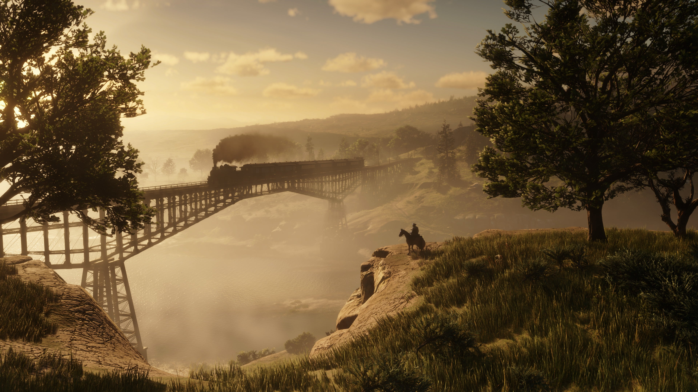

MINECRAFT EDUCATION EDITION: Português, Matemática, História, Geografia,
Física, Química, Ciências, Educação Física,
Artes, Informática e o que mais você quiser!

O Minecraft Education Edition é uma versão educacional do popular jogo Minecraft,
desenvolvida para ser usada como ferramenta de aprendizagem em sala de aula.
Por sua natureza criativa e interativa, ele pode ser aplicado em diversas
disciplinas.
▪ Em História: permite recriar civilizações, monumentos e períodos históricos;
▪ Em Geografia: possibilita estudar mapas, biomas, relevo e recursos naturais;
▪ Em Matemática: pode ser usado para trabalhar cálculos, proporções, geometria;
▪ Em Ciências: auxilia na exploração de conceitos como cadeia alimentar, ecossistemas,
energia e reações químicas;
▪ Em Língua Portuguesa e Inglês: estimula a leitura, escrita e interpretação de textos
dentro de contextos narrativos criados no jogo;
▪ Em Artes: incentiva a criatividade e expressão visual por meio da construção de cenários;
▪ Em Tecnologia e Programação: oferece recursos para aprender fundamentos de código,
pensamento computacional e lógica de programação com blocos de comando.
Assim, o Minecraft Education Edition se destaca como uma plataforma multidisciplinar que
combina aprendizado prático, colaboração e engajamento dos alunos em um ambiente virtual
dinâmico. Assim como a maioria dos jogos, o Minecraft Education Edition tem tutoriais, que
ensinam desde o básico, como andar, pular e realizar etc., até realizar a edição dos quadros
explicativos e criação de fórmulas. O Minecraft Education está disponível para organizações
de educação domiciliar.
Site Oficial
RED DEAD REDEMPTION 2: História

Red Dead Redemption 2 é um jogo de ação e aventura lançado em 2018 pela Rockstar Games.
Ele se passa no final do século XIX, mais precisamente em 1899, durante o declínio do chamado
Velho Oeste nos Estados Unidos. O jogo retrata a vida de foras-da-lei, o avanço da industrialização,
a expansão das cidades, a presença crescente do governo federal e a decadência das gangues que
antes dominavam regiões mais rurais e isoladas. No ensino de História, ele pode ser usado como
ferramenta para discutir:
▪ Industrialização;
▪ O fim da era do Velho Oeste;
▪ A expansão ferroviária e econômica;
▪ Questões sociais e culturais da época;
▪ A formação do Estado moderno nos EUA;
Apesar de conter cenas de luta e ação, você pode selecionar cenários deseja apresentar
para os alunos, cavalgando diretamente até eles ou utilizando a viagem rápida (recurso interno
do jogo para ir de um lado a outro do mapa de maneira quase que imediata,
sem a necessidade de percorrer todo o enorme mapa). O jogo conta com um realismo surpreendente
e paisagens que mostram como o processo de industrialização começou a se estabelecer nos EUA,
com a construção de ferrovias e comércios aumentando conforme você avança na história do jogo.
Este sem dúvida, é um recurso que prenderia a atenção dos alunos.
Site Oficial